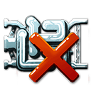

Journey's End
Your flight is over once the last adventure card has been dealt with. Now it's time for rewards! (And penalties.) The game will add it all up for you.

Bonuses


Losses
Now you have to deliver the components of your ship to Corporation Incorporated. For each component you lost along the way you lose 1 cosmic credit.
Fortunately, the Department of Stellar Vehicles requires every space ship to be insured, so there is a limit to how much you can lose. The insurance on your ship is the maximum number of credits you can be penalized.
However, if you lose over twice this many components … well, then you still just pay the maximum. But Corporation Incorporated will fire the guy who signed you up for this job. How you assuage your guilty conscience is up to you.
If you're curious about these numbers, you can click your avatar to zoom in on your ship during the flight. Click the tab at the bottom of the screen to bring up the ship information panel. This will tell you the finishing bonuses, the value of the best-looking ship prize, and the limit guaranteed by your insurance.
Goods
You gain the number of cosmic credits indicated by the price list:

A Different Ending
Not every ship can survive the rigors of space flight. Some players may have to give up before the end of the flight.
A trucker who does not finish does not get the finishing bonus and does not qualify for the best looking ship contest. However, the trucker still keeps any credits earned along the way. The trucker also gets paid for goods, but only half price.
Whether you finish or not, you still have to pay the penalty for any components you lost. A contract is a contract.